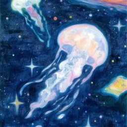

关于我
一名正在成长的数据开发者

你好，我是 FishRain 🐟
目前是一名数据科学与大数据技术专业的本科生。
我关注数据开发与数据仓库方向，在实际项目中积累了 SQL 数据加工、业务指标逻辑拆解、数仓分层开发、ETL 编排与数据质量核验的经验。
我相信数据开发不仅是编写 SQL，更重要的是理解业务数据、明确加工粒度，并构建可维护、可验证的数据链路。
目前正在进一步学习 Spark 与湖仓技术，希望将已有的数仓开发经验拓展到更广泛的数据工程场景。
🐢 慢慢来，比较快。技术成长
如实标注每项技术的实践程度 —— 不堆砌名词，不夸大熟练度。
实际实践
在真实项目中反复使用的技术
基础探索
通过课程与实验建立基础认知
正在学习
当前正在补齐与深入的方向
项目经历
真实的业务项目 —— 以脱敏数据和示意结构整理成可公开的工程复盘。
运营数据仓库建设与 ETL 加工链路重构
已开源围绕业务指标口径拆解、ODS/DWD/DWS/ADS 分层加工、ETL 任务编排及数据质量验证展开的实际数仓开发实践：使用 SQL Server / T-SQL 完成复杂 SQL 加工与存储过程开发，Python 编写数据抽取脚本，SSIS 负责批次编排、异常日志与数据质量核验。
数据血缘可视化与依赖追踪
案例整理中通过梳理表、存储过程与调度批次的上下游关系，构建静态交互式血缘查询页面，辅助理解数据加工链路与依赖影响范围。